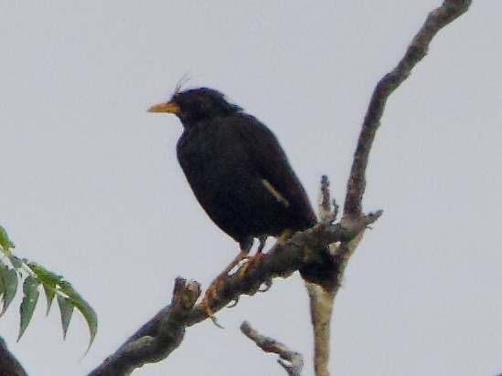

Great Myna
Acridotheres grandis
Order: Passeriformes
Family: Sturnidae

A black myna with a spiffy crest and yellow bill and legs. Native to southeast Asia, introduced to HK.
Order: Passeriformes
Family: Sturnidae

A black myna with a spiffy crest and yellow bill and legs. Native to southeast Asia, introduced to HK.